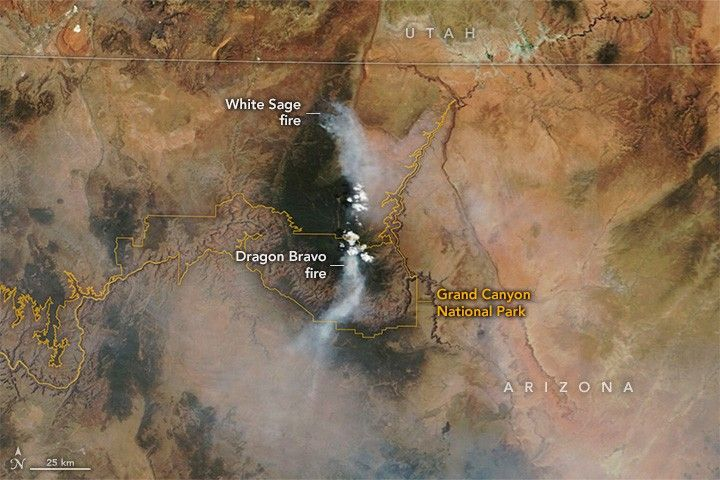

Fires Rage in Arizona
Lightning ignited two wildland fires on the Colorado Plateau near the Grand Canyon in July 2025 that grew to become large and disruptive. The blazes led to the closure of the Grand Canyon’s North Rim, the destruction of dozens of structures, and staff and visitor evacuations from Grand Canyon National Park.
The MODIS (Moderate Resolution Imaging Spectroradiometer) on NASA’s Terra satellite acquired this image of smoke spreading from the fires on July 12, 2025. The blaze closer to the Grand Canyon, the Dragon Bravo fire, ignited on July 4, 2025, and flared up on July 11 amid extreme heat and northwest winds that gusted to 40 miles (60 kilometers) per hour. The photograph, taken from the South Rim by National Park Service staff, shows smoke rising over the North Rim on July 11, 2025.
According to the National Park Service, the fire destroyed a water treatment facility on the North Rim, which released chlorine gas and hampered firefighting efforts. Other structures lost included a visitor center, gas station, park service employee housing, and the Grand Canyon Lodge. The historic lodge, built in 1928, was the only lodging available to visitors inside the park on the North Rim.
A gif moves between false-color Landsat images of the Dragon Bravo fire captured on July 12 (left) and July 13 (right). The fire spread east over that period. Bright orange areas around the charred areas (brown) are the infrared signature of active burning.
Authorities first received reports of smoke from a second fire about 35 miles (55 kilometers) north of the Dragon Bravo fire on July 9. NASA satellites began to detect the fire early on July 10, and the White Sage fire spread rapidly over the next three days in hot, dry, and windy conditions. Standing dead trees left after the 2020 Magnum fire contributed to the blaze’s rapid spread, according to firefighting and forest management teams in the region.
The OLI (Operational Land Imager) and OLI-2 on Landsat 8 and 9, respectively, captured images showing the fire’s progression on July 12 (above left) and July 13 (above right). Burned area is evident in these false-color images, which show shortwave infrared, near infrared, and visible light (bands 7-5-4). This band combination makes it easier to identify unburned vegetated areas (green) and the recently burned landscape (brown). Bright orange indicates the infrared signature of actively burning fires.
NASA fire tracking tools such as the Fire Information for Resource Management System (FIRMS), Worldview, and Fire Events Explorer also show the fire’s rapid spread. By July 14, the fire had charred more than 50,000 acres (20,000 hectares) and was 0 percent contained. By that date, Coconino County had issued evacuation orders for communities along State Route 67 between North Rim and Jacob Lake.
A photograph shows a large air tanker dropping pink flame retardant over brush and short trees in Arizona. The Bureau of Land Management reported that aircraft, including Very Large Air Tankers, dropped nearly 180,000 gallons of fire retardant along the southern and northern perimeters, helping slow the fire’s spread. Lines of flame retardant appear bright green in the false-color images. In natural-color versions of the images, those same lines appear red. The National Park Service photograph, taken from the South Rim, shows an air tanker dropping flame retardant on July 11, 2025.